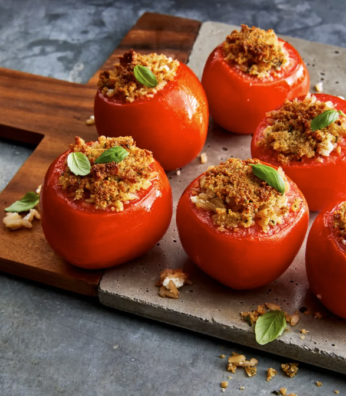

Stuffed Tomatoes Recipe

DESCRIPTION
Garlic, Parmesan cheese, fresh basil, and toasted nuts turn brown rice into a superstar stuffing in this Italian-inspired stuffed tomato side dish that's cooked in the air fryer.
----------------
Prep Time: 15 mins
Cook Time: 15 mins
Total Time: 30 mins
Serving: 4
Yield: 4 stuffed tomatoes
----------------
INGREDIENTS
- 4 medium tomatoes
- olive oil, as needed
- 1 cup cooked brown rice
- ⅓ cup freshly grated Parmesan cheese
- ¼ cup crumbled goat cheese
- ¼ cup chopped toasted walnuts
- 2 tablespoons chopped fresh basil, divided, or more to taste
- 2 cloves garlic, minced
- ¼ cup Italian-seasoned bread crumbs, divided
- 1 tablespoon olive oil
----------------
STEPS
- Cut tops off tomatoes and scoop out flesh with a melon baller, leaving 1/4- to 1/2-inch thick sides and bottoms. Discard tomato tops and flesh.
- Brush the bottom of an air fryer basket with olive oil.
- Combine cooked rice, Parmesan cheese, goat cheese, walnuts, 1 tablespoon basil, and garlic in a medium bowl. Combine bread crumbs, and 1 tablespoon olive oil in a small bowl. Fill tomatoes with rice mixture, then sprinkle with bread crumb mixture. Place stuffed tomatoes into the prepared air fryer basket.
- Cook in the air fryer at 370 degrees F (188 degrees C) until tomatoes are tender, filling is heated through, and topping is golden brown, about 15 minutes. Garnish with remaining basil.